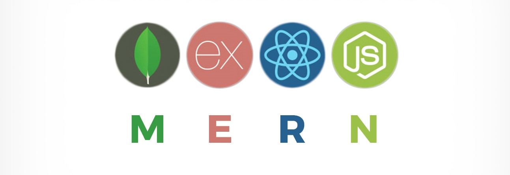

Scrum Masters
The Team
Tomas Anthony | Satjyot Atwal | Martin Acob | Jimmy Le | Ryan Shimozaki | Jian Li | Samuel Fulkerson
The Advisor
Ying Jin
Background
Client Name: Buddhist Church of Florin
Business: Church that serves the need of the general public
Problem to be solved: Website was outdated, needed an update in order to make it more modern
Scope
A new Buddhist Church of Florin website was created with the following design principles in mind:
- Modern Aesthetic
- Modern Technologies
- Accessible, Adaptable, Maintainable
- Dynamicity
Solution
Website Demonstration
Buddhist Church of Florin Website
Updated site includes the following new features:
- Administrative login where administrators of the church can change content
- Google Calendar that the administrators can easily manage
- Payment system where church members can pay membership dues
- Updated User-Interface with more dynamic content
Implementation
We leveraged the powerful MERN tech stack to create this project.
MongoDB
Express.js
React.js
Node.js
MongoDB was used as the primary driver for dynamic content on the website. Content was pulled from the database and rendered on the website. Administrative information was also stored in the database
Express.js was used to build the application API on top of the Node.js framework. The project API handled user logins, password management, sign ups, and more
React.js was the front-end framework used for the project. This powerful framework allowed team members to quickly develop responsive website components for the front-end.
Node.js powered the back-end of the website, handling all of the server-side heavy lifting and interfacing with external APIs.
Implementation By the Numbers
8316 Lines of Code
86 Source Code Files
400 Hours Worked
Testing Details

Most tests were automated. A few manual tests were written.
- Testing was automated using Jest, a Javascript testing framework developed by Facebook.
- 47 Test Suites (files) -> 46 automated and 1 manual
- 97 total tests -> 95 automated, 2 manual
- 2 manual end to end tests
- Manual tests were written for tests that involved external actions that were unable to be recorded by a test software
- For Example: Forgot password feature involves sending a randomly generated 6-digit code to the email entered. User is allowed to change password only if correct code is entered.
- The file "manual_test_descriptions.txt" has step-by-step descriptions of each manual test
- 36 Snapshot tests
- React Test Renderer - library used to render isolated components and take a snapshot of a JSON version of the HTML of the component
- All components have a snapshot test
- Ensures component renders correctly without any unexpected changes
- 49 unit and integration tests
- Enzyme - library used to simulate inputs and clicks on isolated components and check states and props
- React Testing Library - library used to simulate inputs and clicks on isolated components while avoiding referring to implementation details
- Supertest - library used to test models and api routes with a test Mongodb database
- 10 end to end tests
- Puppeteer: library used to completely simulate user interaction with a website on a real browser
- Testing conducted based on what user experiences and sees. Implementation details are not considered.
Lesson Learned
Challenges experienced: Getting client to deliver content (images, description for pages) necessary for each Sprint
Software Development Life Cycle:
- Requirement Specification
- Proposal Development
- Customer Consultation
- Software Design/Testing
- Developement of User/Maintenance Manual
Acknowledgement
Special thanks to:
- CSC 191 Instructor: Jingwei Yang
- Lab Adviser: Ying Jin
- Client: Buddhist Church of Florin
- Stack Overflow